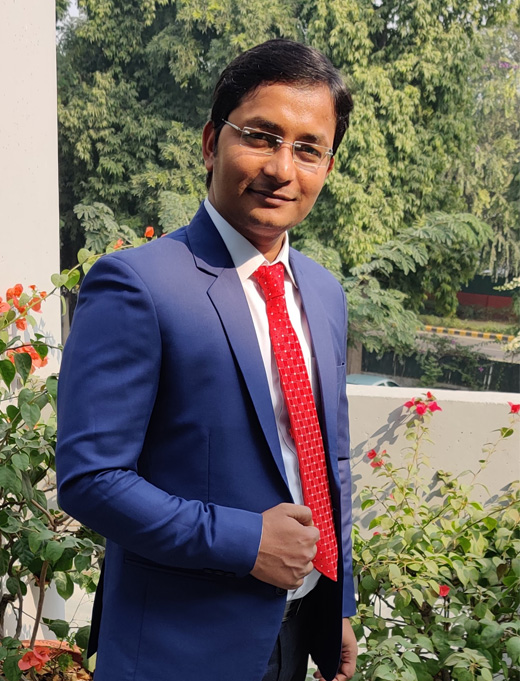
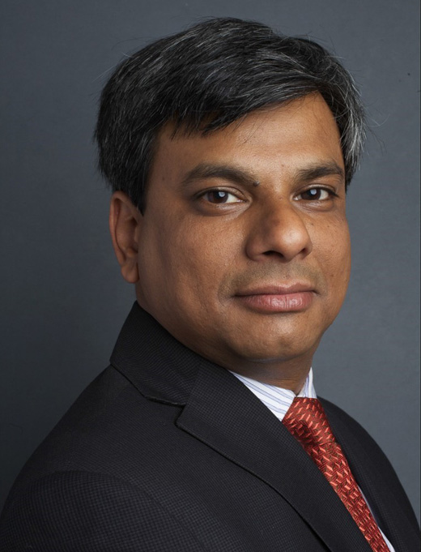
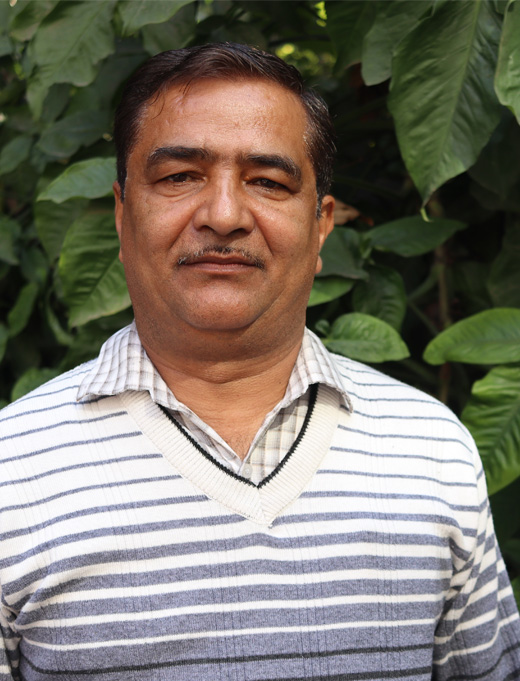
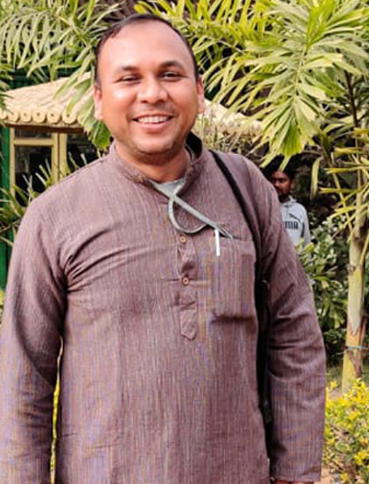
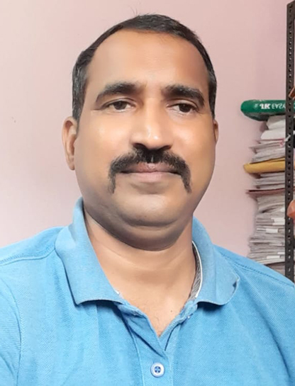
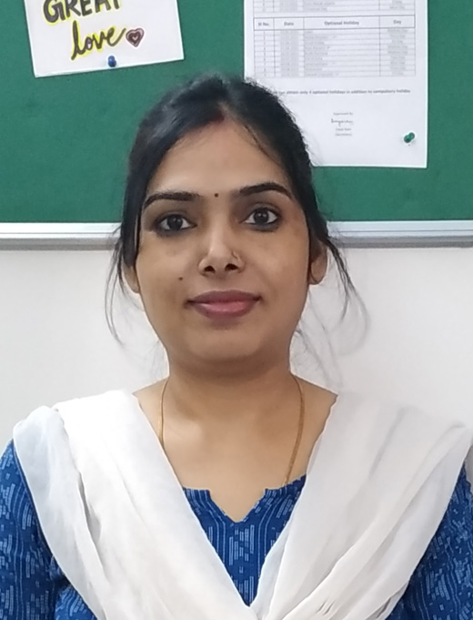
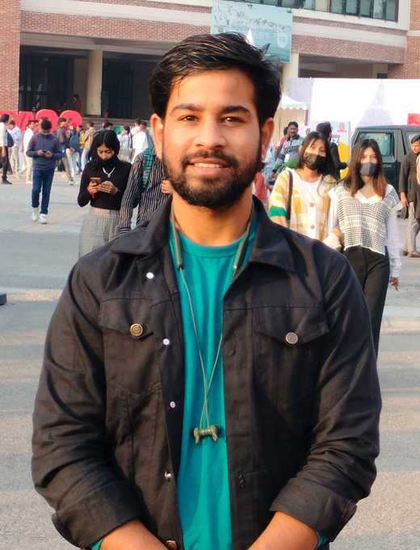
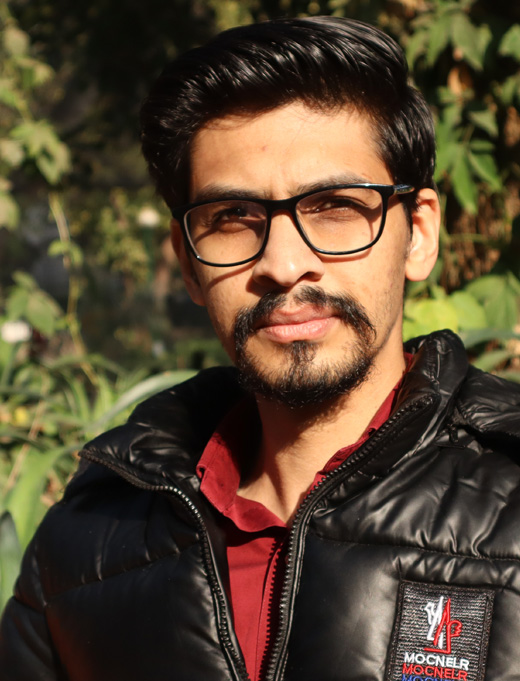

Core Leadership
Core Leadership
Dayaram
Executive Director / Founder
From grassroots village facilitators to pedagogical researchers and institutional directors, meet the dedicated team making quality public education a reality across India’s most remote habitations.
Core Leadership
Executive Director / Founder

Core LeadershipDirector, Finance & Governance
Lead, Research & Evaluation

Core LeadershipSenior Advisor, Partnerships

Core LeadershipLead, HR & Administration

State LeadState Program Head (Odisha)

State LeadState Program Head (Jharkhand)
Lead, Pedagogy & Teacher Circles

Field OperationsDistrict Coordinator

Field OperationsProgram Manager, Field Operations

Field OperationsField Program Coordinator
 Field Collective
Field Collective
2,515+ Field Educators & Leads